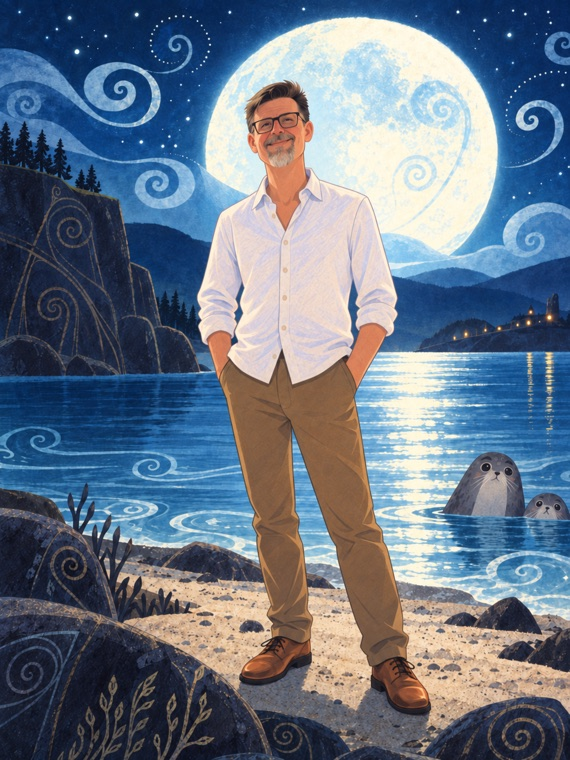

Manning College of Information & Computer Sciences
Tim Richards
Senior Teaching Faculty, University of Massachusetts Amherst
I teach systems software, operating systems, and web programming, including a team-based capstone where students design, build, and scale a real web system together. A good system is a hummingbird's hover: perfectly still from the outside, working furiously underneath. I spend most of my energy helping students see that machinery clearly, and become confident, capable computer scientists.
About
I'm a Senior Teaching Faculty member in the Manning College of Information & Computer Sciences at UMass Amherst, where I've been teaching since 2011. My courses run from first encounters with programming through operating systems and large-scale web development. I like meeting students wherever they are and building from there.
Before UMass, I taught at Trinity College, Clark University, and Springfield College, across subjects from compiler design to introductory computing. I hold a PhD and MS in Computer Science from UMass Amherst and a BA in Computer Science from Clark University.
I keep a running list of the tools I use day to day, in case any of it is useful to colleagues and students.
Outside of teaching, I care a lot about sustainability, the natural world, and the quieter work of building things that last: classrooms, systems, communities. It's a way of thinking I try to bring into how I teach, and into this page itself.

Teaching
Current courses at UMass Amherst:
Introduction to C Programming
Foundations of programming close to the machine: memory, pointers, and the habits of mind that carry into every language after.
Web Programming
Full-stack web development, from HTTP fundamentals to building and deploying real applications.
Scalable Web Systems
A project-based capstone on designing, building, and scaling web systems as part of a team.
Over the years I've also taught data structures, computer systems principles, operating systems, programming methodology, and agile software project management, at UMass Amherst, Trinity College, Clark University, and Springfield College.
Awards & Achievements
- 2017, 2018, 2023 & 2025 Distinguished Teaching Award Nominee
- 2022 UMass Flexible Learning Fellow
- 2020 Manning Prize Nomination
- 2018 College Outstanding Teaching Award (COTA)
- 2018 UMass Innovation Fellow
Research Projects
My research lives at the intersection of teaching and systems. I'm interested in how students learn cloud-based computing platforms, languages, and tools, and in connecting foundational concepts to a real, low-level understanding of the machine, across the many different environments students learn in.
PinTrail
I'm also a core contributor to PinTrail, a student-led mobile app connecting the UMass Amherst community to campus sustainability efforts. It guides people through curated trails of the campus's green initiatives (solar panels, eco-gardens, and other projects hiding in plain sight) with an interactive map and location-based notifications. The project grew out of the campus Earth Day Extravaganza and is built and maintained together with a small team of student developers.
Contact
- Email richards@cs.umass.edu
- Office Room E271, Computer Science Laboratories, 130 Governors Drive, Amherst, MA 01003
- Phone (413) 545-4704
- Directory CICS faculty profile